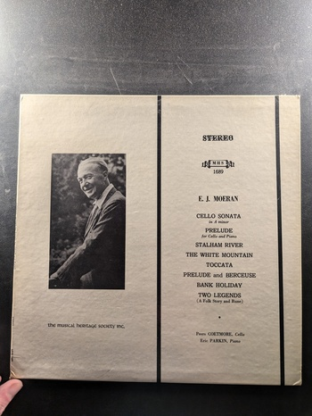
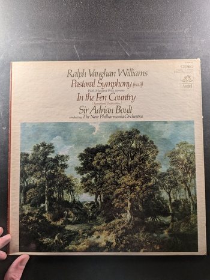

The Rite of Spring
Stravinsky, The Detroit Symphony, Dorati
London Digital LDR 71048
Symphony No. 3 in D Minor
Bruckner
Philips PHS 900-066
Mass in G Minor
Ralph Vaughan Williams
Angel S-36896
Sinfonie Nr. 7 / Symphony No. 7
Herbert von Karajan
EMI Angel AM-34765
Elgar Symphony No. 2
Barenboim
Columbia M 31997
Flos Campi / An Oxford Elegy / Five Variants of 'Dives and Lazarus'
Ralph Vaughan Williams
Angel S-36899
Symphonie Nr. 4: Der Schwan von Tuonela
Jean Sibelius
Deutsche Grammophon 138 974
Missa Choralis / Five Motets
Liszt / Bruckner
Argo
Riders to the Sea / Magnificat
Ralph Vaughan Williams
Angel S-36810
Symphony No. 6 in E Minor / The Lark Ascending
Vaughan Williams
Angel S-36469
Fantasia on a Theme by Tallis / Fantasia on Greensleeves / Introduction and Allegro for String Quartet and String Orchestra / Serenade in E Minor
Vaughan Williams / Elgar
Angel 36101
Cello Sonata in A minor
E.J. Moeran
Musical Heritage Society MHS 1689
Mass in F Minor
Bruckner
Angel S-36093
Symphony No. 4 - Symphony No. 8
Leonard Bernstein, New York Philharmonic
Columbia Masterworks MS 6678
Sancta Civitas / Benedicite
Ralph Vaughan Williams
Angel S-36715
Symphony No. 4 in F Minor / Norfolk Rhapsody No. 1
Ralph Vaughan Williams
Angel S-36669
Symphony No. 10
Shostakovich, Eugene Ormandy, The Philadelphia Orchestra
Columbia Masterworks
Sinfonia Antartica (Symphony No. 7)
Ralph Vaughan Williams
Angel
Serenade to Music / Symphony No. 5 in D (1943)
Ralph Vaughan Williams
Angel S-36606
A London Symphony
Vaughan Williams
Angel S-36478
Pastoral Symphony (no. 3) / In the Fen Country
Ralph Vaughan Williams
Angel S-36653
Symphony No. 9 in E Minor / Fantasia on the 'Old 104th' Psalm Tune
Ralph Vaughan Williams
EMI ASD 3649
Two Flute Concerti
Franz Doppler, Bernhard Romberg
Musical Heritage Society MHS 4117
Job: A Masque for Dancing
Ralph Vaughan Williams, Sir Adrian Boult, London Symphony Orchestra
Angel S-36773
Mass No. 5 in A-Flat Major, D. 678
Franz Schubert
Musical Heritage Society MHS 898
{kind=link}
{kind=link}
{kind=link}
{kind=link}
{kind=link}
{kind=link}
{kind=link}
{kind=link}
{kind=link}
{kind=link}
{kind=link}
{kind=link}
{kind=link}
{kind=link}
{kind=link}
{kind=link}
{kind=link}
{kind=link}
{kind=link}
{kind=link}
{kind=link}
{kind=link}
{kind=link}
{kind=link}
{kind=link}